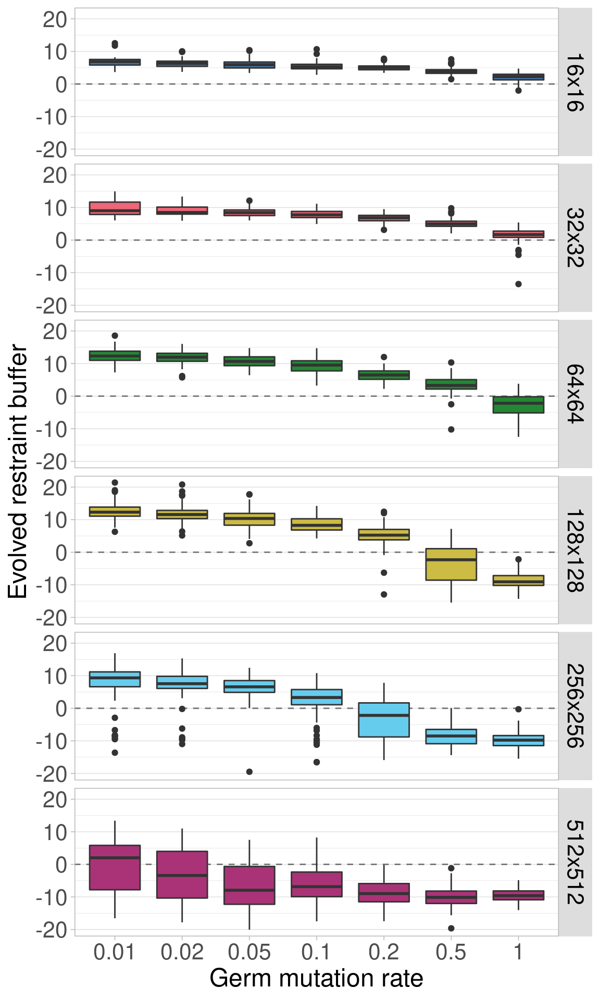
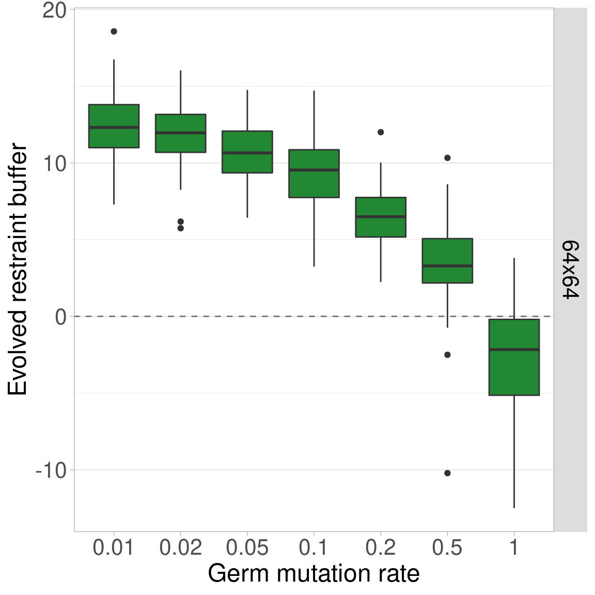
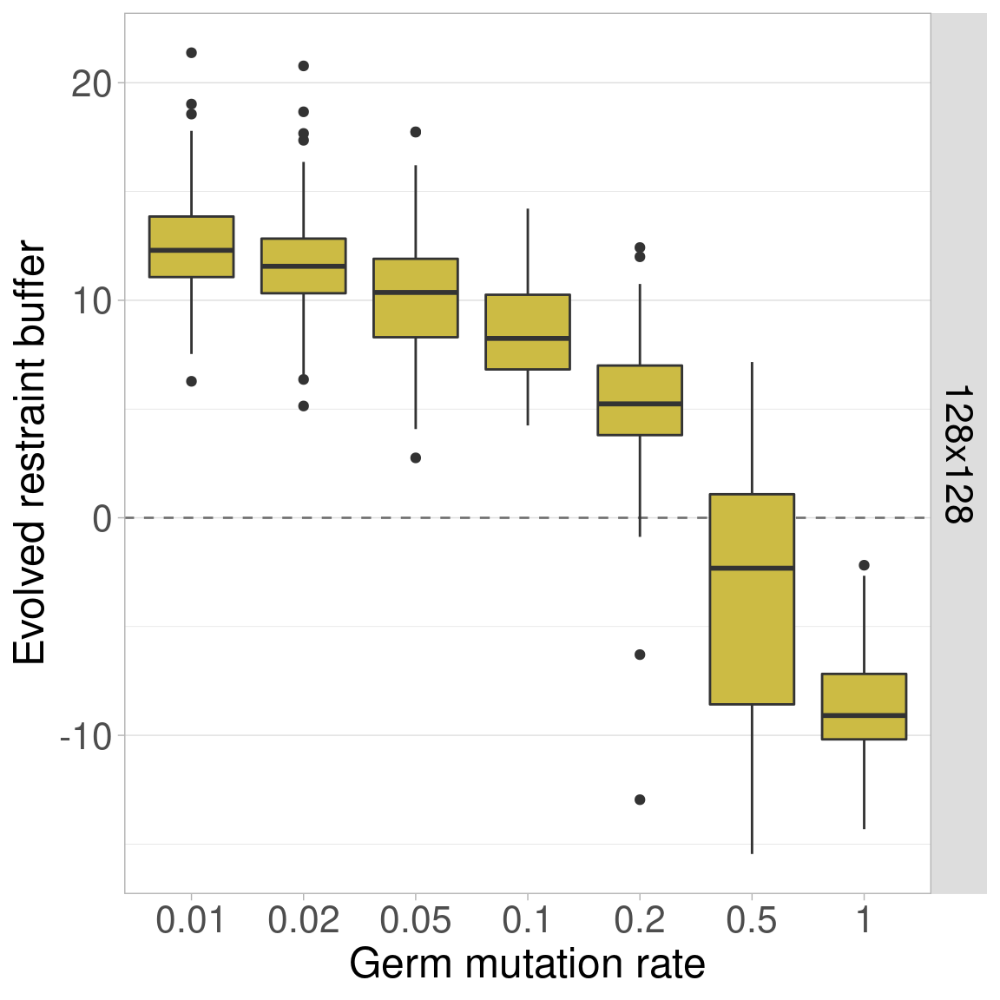
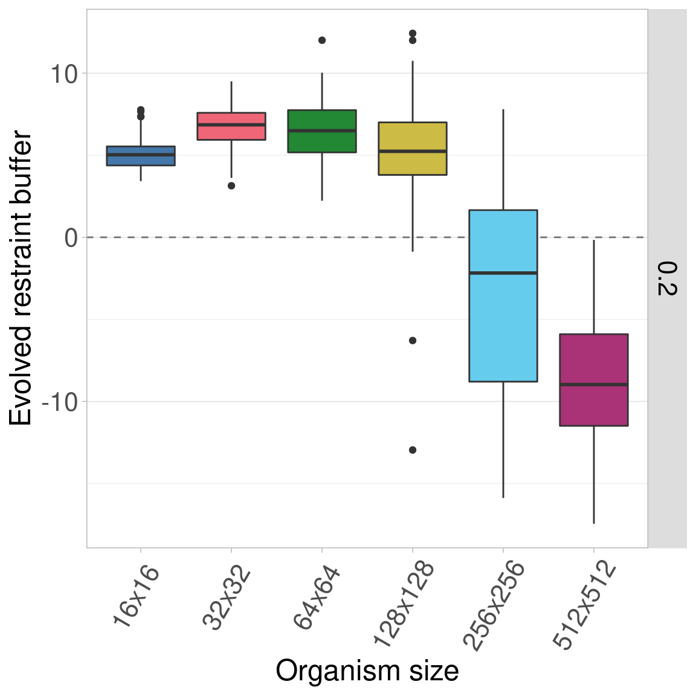

Section 4 Germ Mutation Rate Sweep
This was one of the preliminary experiments we conducted to find the default parameters for Primordium. However, the data shown here were ran after the system was finalized (with new random number seeds). There were no qualitative differences from prior results.
We vary the germ mutation rate, which is the probability that an offspring experiences a mutation to its restraint buffer during organism reproduction. The probability of a mutation is per-genome, not per-bit. When a germ mutation occurs, only a change of +/-1 is possible in the restraint buffer. The final default germ mutation rate was 0.02 (i.e., each organism reproduction has a 2% chance of mutation).
The configuration script and data for the experiment can be found under 2021_02_16__germ_mut_fin/ in the experiments directory of the git repository.
4.1 Data cleaning
Load necessary R libraries
library(dplyr)
library(ggplot2)
library(ggridges)
library(scales)
library(khroma)Load the data and trim include only the final generation data for sizes 16x16 to 512x512.
# Load the data
df = read.csv('../experiments/2021_02_16__germ_mut_fin/evolution/data/scraped_evolution_data.csv')
#df = read.csv('/research/rogue_cell/Primordium/experiments/2021_02_16__germ_mut_fin/evolution/data/scraped_evolution_data.csv')
# Trim off NAs (artifacts of how we scraped the data) and trim to only have gen 10,000
cat(colnames(df), '\n')## X generation ave_ones ave_repro_time min_ones max_ones var_ones rep_id MCSIZE COST GENS MUT POP SAMPLES REPS ONES CELLMUTdf2 = df[!is.na(df$MCSIZE) & df$generation == 10000,]
# Ignore data for size 8x8 and 1024x1024
df2 = df2[df2$MCSIZE != 8 & df2$MCSIZE != 1024,]We group and summarize the data to ensure all replicates are present.
# Group the data by size and summarize
data_grouped = dplyr::group_by(df2, MCSIZE, MUT)
data_summary = dplyr::summarize(data_grouped, mean_ones = mean(ave_ones), n = dplyr::n())Further cleaning of the data plus adding some variables to make plotting easier.
# Calculate restraint value (x - 60 because genome length is 100 here)
df2$restraint_value = df2$ave_ones - 60
# Make a nice, clean factor for size
df2$size_str = paste0(df2$MCSIZE, 'x', df2$MCSIZE)
df2$size_factor = factor(df2$size_str, levels = c('16x16', '32x32', '64x64', '128x128', '256x256', '512x512', '1024x1024'))
df2$size_factor_reversed = factor(df2$size_str, levels = rev(c('16x16', '32x32', '64x64', '128x128', '256x256', '512x512', '1024x1024')))
df2$germ_mut_str = paste('GERM MUT', df2$MUT)
df2$mut_factor = factor(df2$MUT, levels = c(0.01, 0.02, 0.05, 0.10, 0.20, 0.50, 1.00))
data_summary$size_str = paste0(data_summary$MCSIZE, 'x', data_summary$MCSIZE)
data_summary$size_factor = factor(data_summary$size_str, levels = c('16x16', '32x32', '64x64', '128x128', '256x256', '512x512', '1024x1024'))
data_summary$germ_mut_str = paste('GERM MUT', data_summary$MUT)
data_summary$mut_factor = factor(data_summary$MUT, levels = c(0.01, 0.02, 0.05, 0.10, 0.20, 0.50, 1.00))
# Create a map of colors we'll use to plot the different organism sizes
color_vec = as.character(khroma::color('bright')(7))
color_map = c(
'16x16' = color_vec[1],
'32x32' = color_vec[2],
'64x64' = color_vec[3],
'128x128' = color_vec[4],
'256x256' = color_vec[5],
'512x512' = color_vec[6],
'1024x1024' = color_vec[7]
)
# Set the sizes for text in plots
text_major_size = 18
text_minor_size = 16
boxplot_color = '#9ecae1'4.2 Data integrity check
Now we plot the number of finished replicates for each treatment to make sure all data are present. Each row shows a different germ mutation rate. Each bar/color shows a different organism size.
4.3 Aggregate plots
4.3.1 Facet by germ mutation rate
Here we plot all the data at once. Each row shows a different germ mutation rate and each boxplot shows a given organism size.
Here is the same data, plotted identically other than now each row can have a different y-axis.
4.3.2 Facet by organism size
Next, we plot the same data, but this time each row corresponds to a certain organism size while germ mutation rate varies along the x-axis.

Again, we plot the same data again, but now the y-axis can change between rows.
4.4 Single organism size plots
Here we plot each organism size independently, with the germ mutation rate on the x-axis.
4.4.1 Organism size 16x16
4.4.2 Organism size 32x32
4.4.3 Organism size 64x64

4.4.4 Organism size 128x128

4.4.5 Organism size 256x256
4.4.6 Organism size 512x512
4.5 Single organism size plots
Similarly, here we plot each germ mutation rate independently, with the organism size on the x-axis.
4.5.1 Germ mut. rate 0.01
4.5.2 Germ mut. rate 0.02
4.5.3 Germ mut. rate 0.05
4.5.4 Germ mut. rate 0.1

4.5.5 Germ mut. rate 0.2

4.5.6 Germ mut. rate 0.5
4.5.7 Germ mut. rate 1.0
4.6 Statistics
Since organism size is our main point of comparison, we calculate stats for each germ mutation rate.
First, we perform a Kruskal-Wallis test across all organism sizes to indicate if variance exists at that mutation rate. If variance exists, we then perform a pairwise Wilcoxon Rank-Sum test to show which pairs of organism sizes significantly differ. Finally, we perform Bonferroni-Holm corrections for multiple comparisons.
mut_vec = c(0.01, 0.02, 0.05, 0.1, 0.2, 0.5, 1)
df_kruskal = data.frame(data = matrix(nrow = 0, ncol = 4))
colnames(df_kruskal) = c('germ_mut_rate', 'p_value', 'chi_squared', 'df')
for(mut_rate in mut_vec){
df_test = df2[df2$MUT == mut_rate,]
res = kruskal.test(df_test$restraint_value ~ df_test$MCSIZE, df_test)
df_kruskal[nrow(df_kruskal) + 1,] = c(mut_rate, res$p.value, as.numeric(res$statistic)[1], as.numeric(res$parameter)[1])
}
df_kruskal$less_0.01 = df_kruskal$p_value < 0.01
print(df_kruskal)## germ_mut_rate p_value chi_squared df less_0.01
## 1 0.01 9.191452e-79 374.5160 5 TRUE
## 2 0.02 6.227269e-82 389.2251 5 TRUE
## 3 0.05 1.934895e-82 391.5809 5 TRUE
## 4 0.10 1.983976e-83 396.1708 5 TRUE
## 5 0.20 3.180895e-85 404.4991 5 TRUE
## 6 0.50 4.313881e-91 431.7152 5 TRUE
## 7 1.00 2.144229e-92 437.7600 5 TRUEWe see that significant variation exists within each mutation rate, so we perform pairwise Wilcoxon tests on each to see which pairs of sizes are significantly different.
size_vec = c(16, 32, 64, 128, 256, 512)
mut_vec = c(0.01, 0.02, 0.05, 0.1, 0.2, 0.5, 1)
for(mut_rate in mut_vec){
df_test = df2[df2$MUT == mut_rate,]
df_wilcox = data.frame(data = matrix(nrow = 0, ncol = 6))
colnames(df_wilcox) = c('germ_mut_rate', 'size_a', 'size_b', 'p_value_corrected', 'p_value_raw', 'W')
for(size_idx_a in 1:(length(size_vec) - 1)){
size_a = size_vec[size_idx_a]
for(size_idx_b in (size_idx_a + 1):length(size_vec)){
size_b = size_vec[size_idx_b]
res = wilcox.test(df_test[df_test$MCSIZE == size_a,]$restraint_value, df_test[df_test$MCSIZE == size_b,]$restraint_value, alternative = 'two.sided')
df_wilcox[nrow(df_wilcox) + 1,] = c(mut_rate, size_a, size_b, 0, res$p.value, as.numeric(res$statistic)[1])
}
}
df_wilcox$p_value_corrected = p.adjust(df_wilcox$p_value_raw, method = 'holm')
df_wilcox$less_0.01 = df_wilcox$p_value_corrected < 0.01
print(paste0('Germ mutation rate: ', mut_rate))
print(df_wilcox)
}## [1] "Germ mutation rate: 0.01"
## germ_mut_rate size_a size_b p_value_corrected p_value_raw W less_0.01
## 1 0.01 16 32 1.161192e-21 1.161192e-22 990.0 TRUE
## 2 0.01 16 64 1.990837e-31 1.484433e-32 137.0 TRUE
## 3 0.01 16 128 2.032847e-30 1.694039e-31 221.0 TRUE
## 4 0.01 16 256 1.721090e-07 5.736966e-08 2778.5 TRUE
## 5 0.01 16 512 1.237738e-13 2.062896e-14 8130.0 TRUE
## 6 0.01 32 64 4.401194e-15 5.501492e-16 1684.5 TRUE
## 7 0.01 32 128 1.423615e-13 2.847230e-14 1887.0 TRUE
## 8 0.01 32 256 2.438849e-01 1.219425e-01 5633.5 FALSE
## 9 0.01 32 512 5.140604e-27 4.673276e-28 9495.0 TRUE
## 10 0.01 64 128 9.221418e-01 9.221418e-01 5040.5 FALSE
## 11 0.01 64 256 4.110744e-14 5.872491e-15 8195.5 TRUE
## 12 0.01 64 512 6.122051e-32 4.081368e-33 9907.0 TRUE
## 13 0.01 128 256 5.020912e-13 1.255228e-13 8033.5 TRUE
## 14 0.01 128 512 1.990837e-31 1.422026e-32 9864.5 TRUE
## 15 0.01 256 512 1.882508e-17 2.091675e-18 8582.5 TRUE
## [1] "Germ mutation rate: 0.02"
## germ_mut_rate size_a size_b p_value_corrected p_value_raw W less_0.01
## 1 0.02 16 32 5.385908e-24 5.385908e-25 773.5 TRUE
## 2 0.02 16 64 3.620092e-31 2.585780e-32 156.0 TRUE
## 3 0.02 16 128 5.876058e-29 4.896715e-30 339.5 TRUE
## 4 0.02 16 256 7.355430e-06 2.451810e-06 3071.0 TRUE
## 5 0.02 16 512 2.935849e-18 3.669812e-19 8662.0 TRUE
## 6 0.02 32 64 5.800574e-18 8.286535e-19 1375.0 TRUE
## 7 0.02 32 128 4.715120e-12 1.178780e-12 2090.5 TRUE
## 8 0.02 32 256 4.080762e-04 2.040381e-04 6520.5 TRUE
## 9 0.02 32 512 6.645814e-27 6.041649e-28 9485.5 TRUE
## 10 0.02 64 128 2.889472e-01 2.889472e-01 5434.5 FALSE
## 11 0.02 64 256 2.039804e-17 3.399674e-18 8560.0 TRUE
## 12 0.02 64 512 4.109271e-32 2.739514e-33 9920.5 TRUE
## 13 0.02 128 256 2.514342e-14 5.028683e-15 8203.5 TRUE
## 14 0.02 128 512 4.123142e-31 3.171647e-32 9837.0 TRUE
## 15 0.02 256 512 4.866893e-20 5.407659e-21 8848.0 TRUE
## [1] "Germ mutation rate: 0.05"
## germ_mut_rate size_a size_b p_value_corrected p_value_raw W less_0.01
## 1 0.05 16 32 1.591362e-24 1.768180e-25 730.0 TRUE
## 2 0.05 16 64 1.063762e-30 8.864684e-32 198.5 TRUE
## 3 0.05 16 128 3.321119e-21 4.151399e-22 1043.0 TRUE
## 4 0.05 16 256 2.538532e-02 1.269266e-02 3979.5 FALSE
## 5 0.05 16 512 1.050337e-26 9.548517e-28 9468.5 TRUE
## 6 0.05 32 64 3.387540e-14 5.645899e-15 1802.5 TRUE
## 7 0.05 32 128 1.306936e-05 4.356453e-06 3119.5 TRUE
## 8 0.05 32 256 1.528740e-07 3.821850e-08 7251.0 TRUE
## 9 0.05 32 512 3.162116e-32 2.258654e-33 9927.0 TRUE
## 10 0.05 64 128 1.546546e-01 1.546546e-01 5583.0 FALSE
## 11 0.05 64 256 4.390965e-19 6.272808e-20 8741.0 TRUE
## 12 0.05 64 512 6.208612e-33 4.139074e-34 9984.0 TRUE
## 13 0.05 128 256 2.838701e-12 5.677403e-13 7950.5 TRUE
## 14 0.05 128 512 9.845016e-32 7.573090e-33 9886.0 TRUE
## 15 0.05 256 512 3.142822e-26 3.142822e-27 9424.0 TRUE
## [1] "Germ mutation rate: 0.1"
## germ_mut_rate size_a size_b p_value_corrected p_value_raw W less_0.01
## 1 0.1 16 32 2.006447e-24 2.229385e-25 739.0 TRUE
## 2 0.1 16 64 2.197505e-25 1.997732e-26 646.0 TRUE
## 3 0.1 16 128 3.982057e-19 6.636762e-20 1261.5 TRUE
## 4 0.1 16 256 2.853915e-06 9.513050e-07 7006.5 TRUE
## 5 0.1 16 512 1.146029e-26 9.550238e-28 9468.5 TRUE
## 6 0.1 32 64 6.866683e-07 1.716671e-07 2860.0 TRUE
## 7 0.1 32 128 5.714627e-02 5.714627e-02 4221.0 FALSE
## 8 0.1 32 256 7.451552e-21 9.314440e-22 8923.0 TRUE
## 9 0.1 32 512 1.091653e-31 7.797522e-33 9885.0 TRUE
## 10 0.1 64 128 2.618271e-02 1.309135e-02 6016.0 FALSE
## 11 0.1 64 256 6.893655e-25 6.893655e-26 9306.5 TRUE
## 12 0.1 64 512 4.295636e-32 2.863757e-33 9919.0 TRUE
## 13 0.1 128 256 9.294756e-21 1.327822e-21 8908.0 TRUE
## 14 0.1 128 512 2.475810e-31 1.904469e-32 9854.5 TRUE
## 15 0.1 256 512 7.440793e-16 1.488159e-16 8380.0 TRUE
## [1] "Germ mutation rate: 0.2"
## germ_mut_rate size_a size_b p_value_corrected p_value_raw W less_0.01
## 1 0.2 16 32 6.711164e-17 9.587377e-18 1488.5 TRUE
## 2 0.2 16 64 2.652853e-08 5.305706e-09 2610.5 TRUE
## 3 0.2 16 128 5.723537e-01 4.033561e-01 4657.5 FALSE
## 4 0.2 16 256 9.414689e-28 1.046077e-28 9550.0 TRUE
## 5 0.2 16 512 3.841700e-33 2.561134e-34 10000.0 TRUE
## 6 0.2 32 64 5.723537e-01 2.861769e-01 5437.0 FALSE
## 7 0.2 32 128 2.713788e-06 6.784470e-07 7033.5 TRUE
## 8 0.2 32 256 2.557355e-30 2.324869e-31 9768.0 TRUE
## 9 0.2 32 512 3.841700e-33 2.561422e-34 10000.0 TRUE
## 10 0.2 64 128 8.967634e-04 2.989211e-04 6480.5 TRUE
## 11 0.2 64 256 3.597156e-29 3.597156e-30 9671.5 TRUE
## 12 0.2 64 512 3.841700e-33 2.561422e-34 10000.0 TRUE
## 13 0.2 128 256 3.256203e-24 4.070254e-25 9237.5 TRUE
## 14 0.2 128 512 1.052551e-31 8.771259e-33 9881.0 TRUE
## 15 0.2 256 512 1.558734e-09 2.597889e-10 7587.5 TRUE
## [1] "Germ mutation rate: 0.5"
## germ_mut_rate size_a size_b p_value_corrected p_value_raw W less_0.01
## 1 0.5 16 32 3.627488e-11 7.254975e-12 2195.0 TRUE
## 2 0.5 16 64 1.774145e-01 1.774145e-01 5552.5 FALSE
## 3 0.5 16 128 9.003159e-21 1.125395e-21 8915.0 TRUE
## 4 0.5 16 256 3.840402e-33 2.560268e-34 10000.0 TRUE
## 5 0.5 16 512 3.840402e-33 2.560412e-34 10000.0 TRUE
## 6 0.5 32 64 1.574642e-07 5.248808e-08 7228.0 TRUE
## 7 0.5 32 128 3.547680e-25 3.941867e-26 9328.0 TRUE
## 8 0.5 32 256 3.840402e-33 2.560701e-34 10000.0 TRUE
## 9 0.5 32 512 3.840402e-33 2.560845e-34 10000.0 TRUE
## 10 0.5 64 128 4.292292e-17 6.131846e-18 8532.5 TRUE
## 11 0.5 64 256 3.128938e-32 3.128938e-33 9916.0 TRUE
## 12 0.5 64 512 1.333109e-32 1.211917e-33 9948.0 TRUE
## 13 0.5 128 256 2.868826e-09 7.172065e-10 7522.5 TRUE
## 14 0.5 128 512 9.393819e-14 1.565636e-14 8144.5 TRUE
## 15 0.5 256 512 3.381624e-03 1.690812e-03 6285.5 TRUE
## [1] "Germ mutation rate: 1"
## germ_mut_rate size_a size_b p_value_corrected p_value_raw W less_0.01
## 1 1 16 32 1.080497e-01 5.402483e-02 5789.0 FALSE
## 2 1 16 64 2.560330e-24 2.844811e-25 9251.5 TRUE
## 3 1 16 128 3.840402e-33 2.560268e-34 10000.0 TRUE
## 4 1 16 256 3.840402e-33 2.887894e-34 9996.0 TRUE
## 5 1 16 512 3.840402e-33 2.560412e-34 10000.0 TRUE
## 6 1 32 64 1.004804e-19 1.674674e-20 8799.0 TRUE
## 7 1 32 128 8.265949e-32 8.265949e-33 9883.0 TRUE
## 8 1 32 256 7.190219e-32 6.536563e-33 9891.0 TRUE
## 9 1 32 512 5.842919e-32 4.869099e-33 9901.0 TRUE
## 10 1 64 128 1.007238e-18 2.014476e-19 8689.0 TRUE
## 11 1 64 256 7.963405e-23 1.137629e-23 9105.0 TRUE
## 12 1 64 512 5.680932e-23 7.101164e-24 9124.0 TRUE
## 13 1 128 256 1.357430e-02 3.393576e-03 6199.5 FALSE
## 14 1 128 512 3.704384e-02 1.234795e-02 6024.5 FALSE
## 15 1 256 512 4.892624e-01 4.892624e-01 4716.5 FALSE